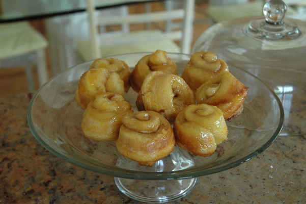

Orange Sticky Buns
My Father's Recipe... Once thought to be Lost!

When my father passed away almost twenty years ago, we were afraid that his special breakfast recipe had been lost forever. But Mom found it, and before it disappears again, I decided to post it on the website. These buns are easy and delightful, with a unique "orange juice glaze" on top!
Ingredients
- 1/2 cup melted butter, separated
- 1/2 cup orange juice
- 3/4 cup sugar (1/2 cup for orange glaze, 1/4 cup for buns)
- 1/2 tsp cinnamon
- 2 tsp grated orange peel
- 2 cups sifted enriched flour
- 3 tsp baking powder
- 1/2 tsp salt
- 3 to 4 tbsp shortening
- 3/4 cup milk
Instructions
- Combine 1/4 cup melted butter, orange juice, 1/2 cup sugar and orange peel. Cook 2 minutes. Pour into 9 greased muffin pans.
- Sift flour, baking powder and salt. Cut in shortening. Add milk and stir until dough follows fork. Kneed about 4 minutes to rolling consistency.
- Roll 1/4 inch thick. Brush with the remaining 1/4 cup of melted butter, sprinkle with 1/4 cup sugar and 1/2 tsp cinnamon. Then roll as for a jelly roll. (Like a cinnamon roll.)
- Cut 1-inch slices and place them cut-side-down in the muffin tins on top of the orange mixture.
- Bake in a very hot oven (450 degrees) for 20-25 minutes.
- After a few minutes to cool, tip muffin pan upside down on a cookie sheet or waxed paper. Makes 9 buns.
From what Mom tells me, this was originally an old Betty Crocker recipe, but I think Dad had made some modifications and notes to it. I'm always hesitant to cook with shortening these days, so next time I'm going to try to simply substitute butter. (No trans-fats) I'll let you know how it turns out.
AI Editorial Notes:
- FLAG FOR REVIEW: Discrepancy with the butter! The ingredients list exactly "1/4 cup butter". Step 1 says "Combine butter..." and Step 2 says "Brush with butter". It's unclear whether the 1/4 cup is entirely used in the glaze, entirely in the brush, or divided. Please validate.
- Updated absolute image path
/images/buns.jpgto localimages/buns.jpg.